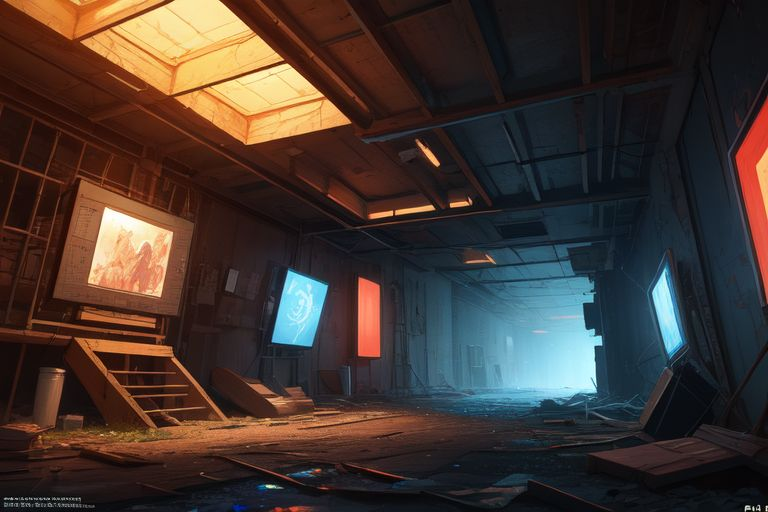

Intro
You wake up in an abandoned research facility with no memory of how you got there. The facility's AI, ECHO, speaks to you through intercoms, guiding you through a maze of locked doors, cryptic puzzles, and strange artifacts. The AI claims to be trying to help you escape—but can you trust it?